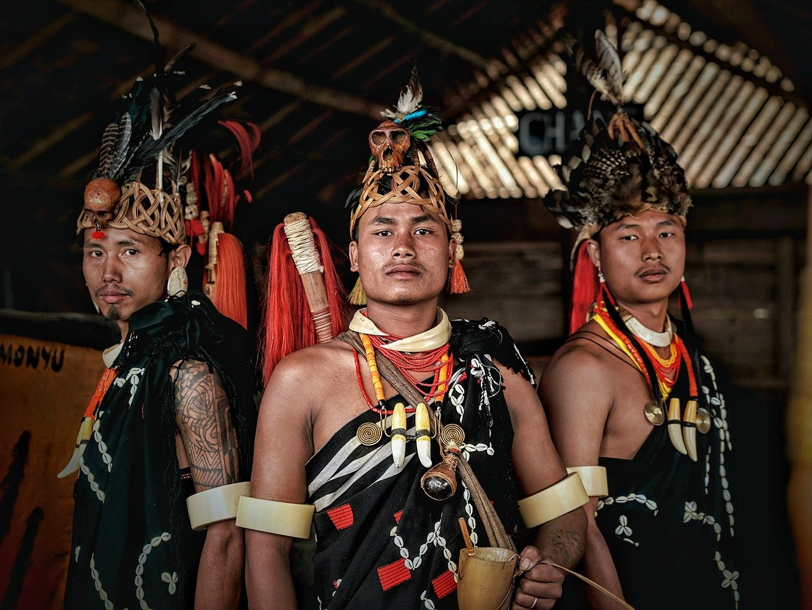
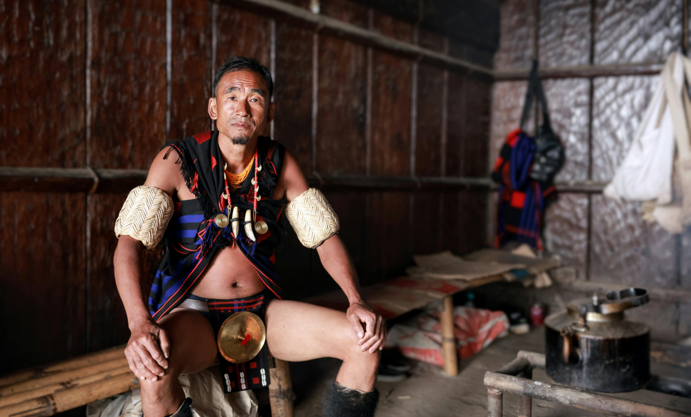
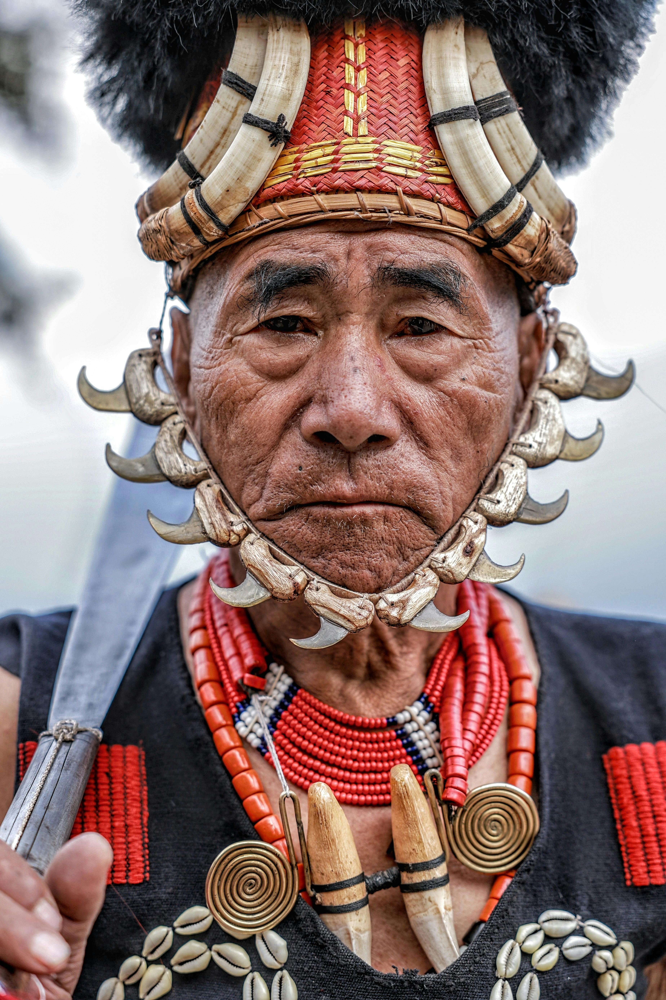

✖

Celebrating culture, unity, and heritage
Nagaland is a land of rich tribal heritage, colorful festivals, warrior traditions, and strong community values.Nagaland is more than just a place—it's a living tapestry of culture, courage, and community. Home to 16 major tribes, each with its own identity, the state thrives on traditions passed down through generations. The rhythm of tribal music, the colors of traditional attire, and the spirit of unity define its people. Whether it’s the grand Hornbill Festival or everyday village life, Nagaland celebrates life with pride, resilience, and deep-rooted values.

Hornbill Festival represents unity among Naga tribes.

Traditional villages reflect sustainable community living.

Each tribe has its own unique dance and attire.